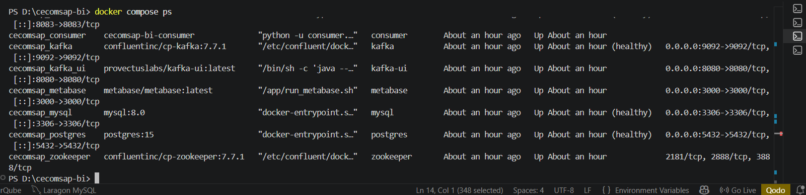
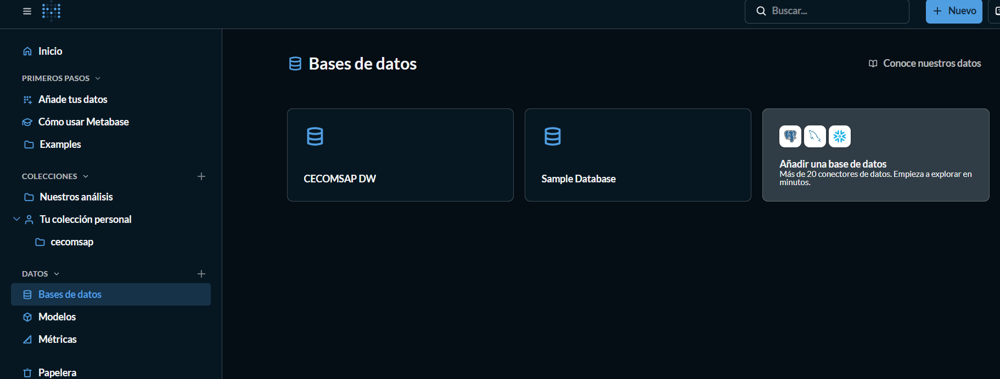
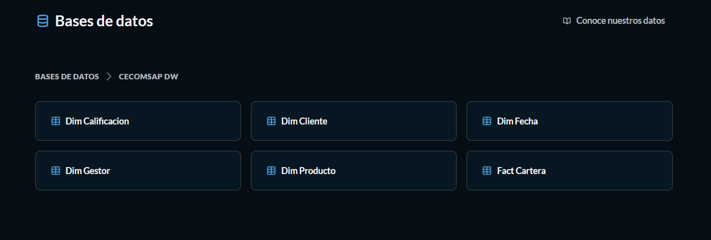
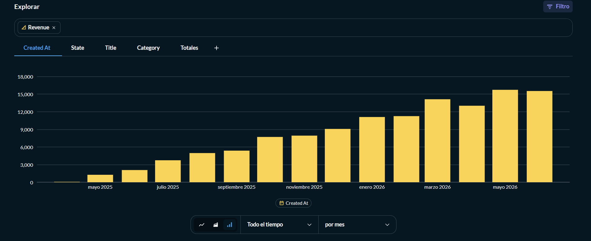
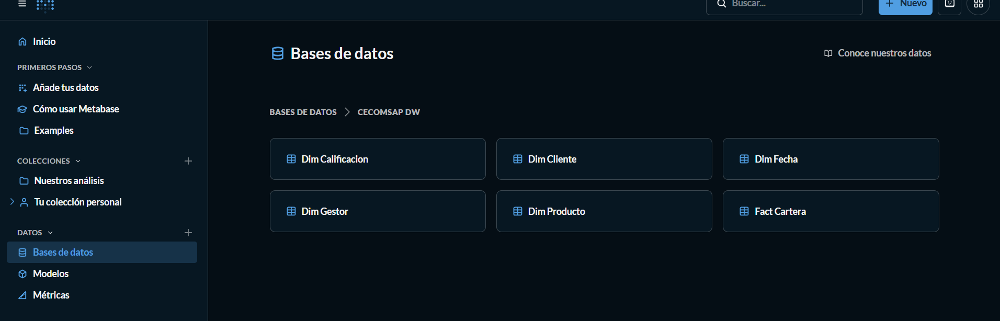

Entregable Final U3 — CECOMSAP
PRODUCTO DEL CURSO — UNIDAD 3
Sistema de Inteligencia de Negocios CECOMSAP — Cartera de Créditos
Solución BI end-to-end: desde la base de datos transaccional hasta el dashboard de decisión.
Docente: Mg. Abel Ángel Sullon Macalupu
Repositorio: https://github.com/Milagros-hp/BI.git
1. Datos Generales del Proyecto
Este informe documenta la solución de Inteligencia de Negocios end-to-end construida para la Cooperativa de Ahorro y Crédito CECOMSAP Limitada (San Román, Puno). Cubre el ciclo completo: desde la base de datos transaccional hasta el dashboard en Power BI, pasando por la ingesta CDC con Debezium+Kafka, la transformación en capas con dbt y la validación de cada KPI.
| Campo | Detalle |
|---|---|
| Nombre del proyecto BI | Sistema de Inteligencia de Negocios — Cartera de Créditos CECOMSAP |
| Proceso de negocio | Gestión de cartera de créditos al corte 31/03/2026 (737 créditos) |
| Fuente transaccional | MySQL 8.0 (oltp_cecomsap) — contenedor Docker |
| Corte de datos | 31 de marzo de 2026 |
| Repositorio GitHub | https://github.com/Milagros-hp/BI.git |
1.1 Herramientas Utilizadas
| Componente | Herramienta / Tecnología | Evidencia |
|---|---|---|
| OLTP | MySQL 8.0 (Docker) | Contenedor cecomsap_mysql, puerto 3306 |
| Ingesta CDC | Debezium 2.7 + Kafka Confluent 7.7 | Conector MySQL binlog → topic Kafka |
| Consumer | Python 3 (consumer.py) | Kafka → raw.cartera en PostgreSQL |
| Data Warehouse | PostgreSQL 15 (Docker) | Contenedor cecomsap_postgres, puerto 5432 |
| Transformación | dbt Core + dbt-postgres | 7 modelos: stg_cartera + 5 dims + fact_cartera |
| Dashboard | Power BI Desktop | cecomsap_cartera.pbix |
| Documentación | MkDocs + GitHub Actions | Sitio publicado automáticamente en cada push |
2. Resumen Ejecutivo
La Cooperativa CECOMSAP gestiona 737 créditos activos en su sistema MySQL, pero ese sistema sirve para operar, no para analizar: la gerencia no podía saber cuántos créditos están en mora, qué calificación SBS tienen, qué gestor concentra más riesgo, ni cuánto capital está en riesgo de pérdida. Las decisiones se tomaban con reportes manuales en Excel.
Para resolverlo, el equipo construyó una solución BI completa: los datos nacen en MySQL, se replican en tiempo real hacia PostgreSQL mediante Debezium + Kafka + Consumer Python, se transforman con dbt en tres capas (raw, staging, marts) aplicando reglas de negocio crediticio y un modelo dimensional tipo Estrella (una tabla de hechos y cinco dimensiones), y se consumen desde Power BI con 6 KPIs clave, comparativos temporales y semáforos de interpretación.
Los hallazgos confirman que la cartera presenta un índice de morosidad que supera el umbral de alerta cooperativista, con concentración en créditos del bucket mayor a 30 días y en la calificación PÉRDIDA (PER). Con base en esta evidencia, el equipo recomienda activar un plan de cobranza intensiva priorizado por bucket de atraso y gestor.
3. Problema de Negocio y Objetivo Analítico
3.1 Problema de Negocio
| Elemento | Descripción |
|---|---|
| Área o proceso | Gestión de cartera de créditos y cobranza |
| Problema identificado | Los datos de cartera existen en MySQL pero no hay infraestructura analítica para convertirlos en información de gestión de riesgo crediticio |
| Usuarios principales | Gerencia general, jefatura de créditos, gestores de cobranza, área de riesgos |
| Decisiones a mejorar | Priorización de cobranza, asignación de gestores, cálculo de provisiones, alertas de mora |
| Impacto esperado | Reducir el índice de morosidad y optimizar provisiones con datos validados en tiempo real |
3.2 Objetivo Analítico
Construir una solución BI end-to-end que permita a la gerencia monitorear la cartera en tiempo real, comparar la mora actual contra el periodo anterior y el mismo periodo del año previo, identificar créditos en riesgo por calificación SBS y bucket de atraso, y soportar decisiones de cobranza basadas en datos validados.
3.3 Preguntas de Negocio
| Pregunta de negocio | KPI relacionado | Visual en Power BI |
|---|---|---|
| ¿Cuál es el índice de morosidad actual? | Índice de Morosidad % | Tarjeta KPI + semáforo |
| ¿Cuánto capital está en riesgo real? | Capital en Mora (S/) | Tarjeta KPI |
| ¿La provisión cubre la mora? | Cobertura de Provisión % | Medidor |
| ¿Qué calificación SBS concentra más saldo? | Saldo Vigente Total por calificación | Barras apiladas |
| ¿Mejoramos vs el año pasado? | Variación Saldo % vs Año Anterior | Línea + tarjeta comparativa |
| ¿Qué gestor tiene más mora? | Capital en Mora por Gestor | Tabla ranking |
4. KPIs del Proyecto
| # | KPI | Fórmula de negocio | Campo en fact_cartera | Medida DAX |
|---|---|---|---|---|
| 1 | Saldo Vigente Total | SUM(saldo_credito) | saldo_credito | SUM(fact_cartera[saldo_credito]) |
| 2 | Capital en Mora | SUM(capital_atraso) | capital_atraso | SUM(fact_cartera[capital_atraso]) |
| 3 | Índice de Morosidad % | Capital en Mora / Saldo Vigente × 100 | calculado en dbt | DIVIDE([Capital en Mora],[Saldo Vigente Total],0)*100 |
| 4 | Provisión Total | SUM(provision_cartera) | provision_cartera | SUM(fact_cartera[provision_cartera]) |
| 5 | Cobertura de Provisión % | Provisión Total / Capital en Mora × 100 | calculado en DAX | DIVIDE([Provisión Total],[Capital en Mora],0)*100 |
| 6 | % Cartera en Riesgo | Saldo PER+DUD+DEF+POT / Saldo Total × 100 | calculado en DAX con dim_calificacion | DIVIDE(CALCULATE(SUM saldo, calif IN {PER,DUD,DEF,POT}), [Saldo Vigente Total],0)*100 |
4.1 Criterios de Interpretación (Semáforo)
| KPI | 🔴 Riesgo | 🟡 Alerta | 🟢 Saludable |
|---|---|---|---|
| Índice de Morosidad % | > 8% | 5% – 8% | < 5% |
| Cobertura de Provisión % | < 80% | 80% – 100% | > 100% |
| % Cartera en Riesgo | > 15% | 8% – 15% | < 8% |
5. Arquitectura BI Implementada
BD MARZO26.xlsx → loader.py → MySQL OLTP (oltp_cecomsap)
→ Debezium CDC → Kafka
→ consumer.py → PostgreSQL raw (Bronze)
→ dbt staging (Silver) → dbt marts (Gold)
→ Power BI

| Componente | Estado | Evidencia en el repo |
|---|---|---|
| MySQL OLTP — tabla cartera (50 cols, 737 filas) | Completo | 2_mysql/01_create_oltp_table.sql |
| Loader Excel → MySQL | Completo | 1_data/load_to_mysql.py |
| Debezium conector CDC | Completo | 3_debezium/connector-config.json |
| Kafka broker + topic | Completo | docker-compose.yml (cp-kafka:7.7.1) |
| Consumer Python → raw.cartera | Completo | 4_consumer/consumer.py |
| PostgreSQL raw (Bronze) | Completo | 5_postgres/02_create_raw_table.sql |
| dbt staging (Silver) — stg_cartera | Completo | 6_dbt/models/staging/stg_cartera.sql |
| dbt marts (Gold) — 5 dims + fact_cartera | Completo | 6_dbt/models/marts/ |
| Power BI — modelo + 6 KPIs + dashboard | Completo | 8_powerbi/medidas_dax.md |
6. Fuente Transaccional OLTP
PASO 1 — Levantar el stack Docker
docker compose up -d && docker compose ps

PASO 2 — Cargar el Excel a MySQL
docker compose --profile load run --rm loader
# Output: 737 filas insertadas en oltp_cecomsap.cartera

PASO 3 — Verificar los datos en MySQL
SELECT COUNT(*) AS total_creditos,
ROUND(SUM(saldo_credito), 2) AS saldo_total,
ROUND(SUM(capital_atraso),2) AS mora_total
FROM oltp_cecomsap.cartera;

7. Pipeline de Ingesta y Transformación
PASO 4 — Registrar el conector Debezium
curl -X POST http://localhost:8083/connectors \
-H "Content-Type: application/json" \
-d @3_debezium/connector-config.json

PASO 5 — Consumer → raw.cartera
docker compose up -d consumer

PASO 6 — dbt run
docker compose --profile dbt run --rm dbt run
# 7 modelos OK: stg_cartera + 5 dims + fact_cartera


PASO 7 — dbt test
docker compose --profile dbt run --rm dbt test
# N of N PASS

PASO 8 — Verificar las tres capas
SELECT COUNT(*) FROM raw.cartera; -- 737
SELECT COUNT(*) FROM staging.stg_cartera; -- 704
SELECT COUNT(*) FROM marts.fact_cartera; -- 704

8. DataMart y Modelo Dimensional


9. Modelo Semántico en Power BI
PASO 9 — Conectar Power BI

PASO 10 — Importar tablas marts

Comparativo temporal

10. Dashboard Interactivo

11. Validación de KPIs


17. Aporte Individual del Equipo
OLTP MySQL: Instalación y configuración del contenedor MySQL 8.0; creación de oltp_cecomsap con la tabla cartera (50 columnas, índices CDC); carga del archivo BD_MARZO26.xlsx con load_to_mysql.py; verificación de 737 registros sin duplicados en cod.
Debezium + Kafka: Configuración del stack Kafka (Zookeeper + Broker + Kafka Connect); registro del conector Debezium con connector-config.json; verificación del topic Kafka con los 737 mensajes del snapshot inicial; pruebas de CDC incremental.
Consumer Python + dbt: Configuración y ejecución de consumer.py; verificación de raw.cartera en PostgreSQL (737 filas); construcción del proyecto dbt (7 modelos); pruebas automáticas de calidad; validación cruzada OLTP vs DataMart con diferencia cero.
Power BI: Conexión al esquema marts de PostgreSQL; modelo semántico con 5 relaciones; creación de los 6 KPIs DAX + comparativos temporales + semáforos; construcción de las 3 páginas del dashboard; validación SQL vs Power BI con diferencia cero.
Integración U3: Construcción de los comparativos obligatorios; actualización de la trazabilidad de los 6 KPIs; documentación MkDocs y GitHub Actions; redacción del documento integrador; preparación de la PPT de sustentación.